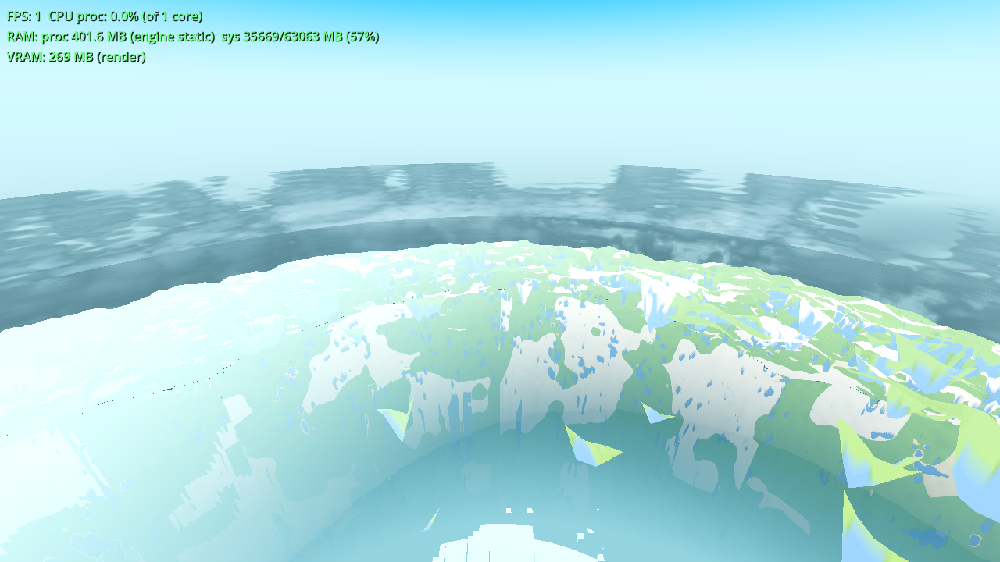
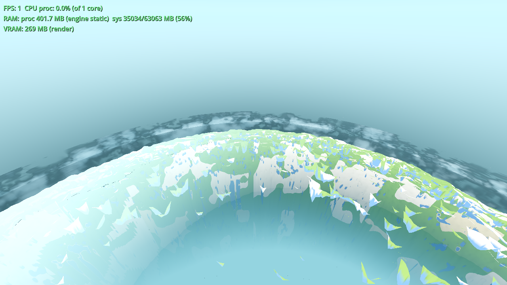
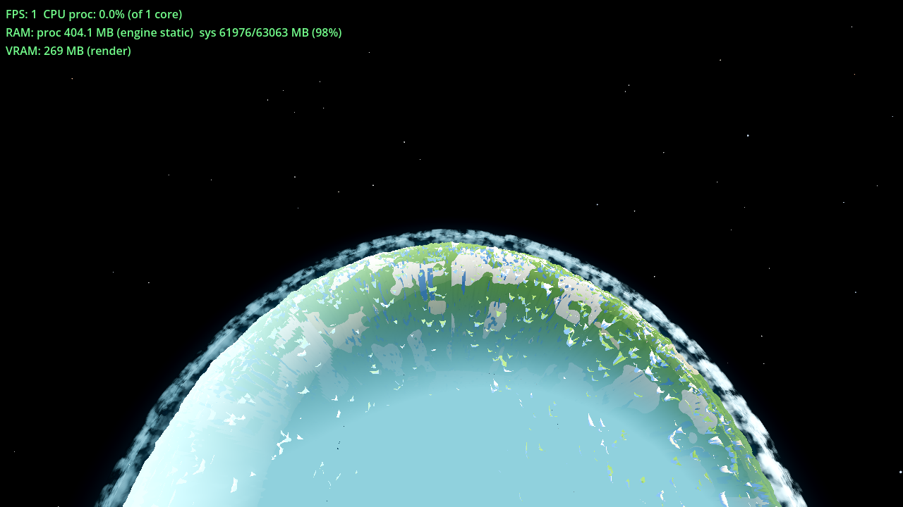
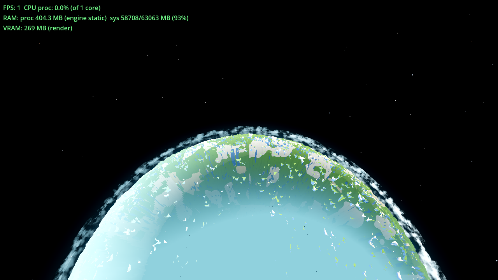
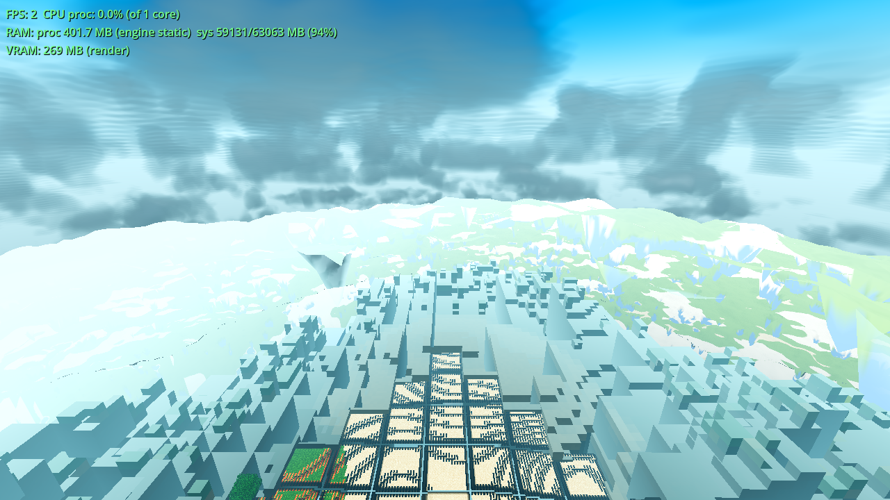

Spec source: the tasks/TASKS.yaml AC-0407 notes (no spec.html in the
ticket folder — the notes are the spec; recorded as a deviation in
continuity.md). The user's three sentences, verbatim: (1) the clouds
are still too dark; (2) they have no variance in height so they read as a uniform layer at a
single altitude; (3) passing through them does not feel like being inside anything.
Plan: plan.html (kept honest — the profile row was updated when the
implementation found the window-correlation trap). All frames are the ticket's acceptance set,
same recipe as AC-0405/AC-0406 (user config R24/F83, T = 0.5 frozen, CLOUD_T0 = 411200, 1280×720
Forward+ lavapipe, 1200 s cap, Forward+ boot line asserted per frame, SNAP file existence checked;
DSSTATS FPS burn-in shows the box's normal 1–2 FPS volume rate). Before frames:
tasks/AC-0406/*.png (the pre-change tree, same recipe).
| change | where | why it fixes the complaint |
|---|---|---|
| Vertical profile — flat base, lumpy tops (complaint 2, structural) | cloud_layer.gdshader — vprof2(q, topf) replaces vgate(q);
top = mix(0.45, 0.98, smoothstep(0.35, 0.65, topf)) with
topf = anv(q·(sc3·0.5) + (5.3, 11.7, 8.1)) (1 octave, HALF the base frequency —
independent of the coverage window); prof = 1 − smoothstep(top−0.20, top, hn); the
coarse light-march density takes the SAME topf |
Before: every column filled the annulus uniformly — one slab at one altitude, top spread 0 m. After: each column thins to 0 at its own top, driven by a ~512 m-scale weather field. The light march exits each column at its own top, so the tops stay lit (without this, the light march would exit at the flat gate and over-shadow every top shorter than the gate — phantom cloud above a short column's top). |
| Thickened virtual annulus — room for the skyline | world.gd _ac0401_push: u_vol_rmax = R + hmax +
AC0407_VOL_TOP_EXTEND (50 m) → [R+275, R+450]; shell meshes stay 275/330/400; the
base stays clear of the ~139 m ground; upward only |
The tops can now tower 354–446 m instead of all ending at 400 m. Cost-neutral: the march is count-based (24 steps/segment), a longer chord just coarsens the step (the grain gate keeps over-integration safe). |
| Forward-scatter glow (complaints 1 + 3) | vmarchseg: L += T·pow(max(cosSun,0), u_vol_glow_pow)·u_vol_glow·ds;
new uniforms u_vol_glow 0.30 / u_vol_glow_pow 6.0 |
A narrow sun-side bloom, phase-gated: the cloud brightens toward the light — the inside-the-cloud read. Directional, not a uniform lift (the rejected 0.7-ambient flattening is avoided by construction). |
| Brighter MS octave (complaint 1, shadowed interior) | u_vol_ms2 0.18 → 0.24 |
Deeper multiple-scattering penetration into the shadowed interior. The normalisation keeps
sh = 1.0 at τ = 0, so lit tops keep their calibration (form-preserving). |
| Brighter effective albedo (complaint 1 — NOT the ambient-weight raise) | new uniform u_vol_air_lift 0.10: air_s = mix(air_s, vec3(1.0), 0.10) |
The single-source air colour lifted 10 % toward a brighter sky value — the ticket's named candidate — at the SAME ambient weight (0.45, the un-rejected value). A brighter effective albedo, explicitly not the 0.7 weight that flattened the spread to 39.1. |
| Light-march tap trim (the stated cost trade) | u_vol_lsteps 6 → 5 (400 m reach still clears the 175 m layer) |
The light march now taps the topf field too (+1 coarse tap per step); trimming one tap offsets it. The self-shadow reach is unchanged (a base sample needs 175 m to exit the tops); the deepest shadow is a hair brighter — aligned with the complaint, not against it. |
0.55·base + 0.45·mid, linear remap). Field-sampling over 64,440 column directions
showed that pins every cloudy column's top to ~400 m — a 13 m "skyline", i.e. the complaint
survives: the coverage window sits on base's octaves, so a cloudy column's weather is by
construction mid-range. The fix: a top driver at HALF the base frequency, at an offset,
independent of the window. Measured skyline: 92.7 m (§3).Sunlit-top reference = the r700 deck mask (ON vs clouds-OFF, max-channel diff ≥ 8; the
DSSTATS overlay region x<400, y<80 excluded from the mask counts). Luminance =
0.2126R+0.7152G+0.0722B on the 8-bit frames.
| measure | before (AC-0406 tree) | after (AC-0407) | read |
|---|---|---|---|
| Sunlit-top reference — r700 deck mask: lum mean / p10 / p50 / p90 / max | 139.5 / 110.6 / 132.0 / 178.4 / 241.6 | 142.3 / 113.2 / 133.4 / 183.6 / 241.6 | the deck face is brighter, hardest at p90 (+5.2); the lit tops still clamp (max unchanged). Mask mean RGB (100,149,163) → (106,151,164): brighter, same saturated tint. |
| Underside at the ground view — r120 band (y 80–290): lum mean / p10 / p50 / p90 | 185.7 / 149.5 / 180.3 / 228.1 | 187.3 / 155.3 / 181.6 / 227.9 | the underside's dark cores lift (p10 +5.8), the bright side holds (p90 flat) — raised without flattening. Underside p50 / deck p90: 1.01 → 0.99 — the underside reads at the lit-top luminance (bright, not merely not-black). |
| Altitude view, inside the annulus — r300 interior band (y 215–360): lum mean / p10 / p50 / p90 | 184.7 / 142.2 / 175.8 / 235.4 | 190.3 / 150.7 / 182.6 / 235.4 | the whole distribution lifts (p10 +8.5, the biggest single move of the ticket), the lit side clamps (p90 flat). Band std 34.4 → 32.3, band min 126.2 → 129.9: brighter AND lower-contrast — the ticket's "bright and low-contrast, not dark and high-contrast". |
Brightness spread (the AC-0405 instrument: r700 lower_mid lum_std,
y∈[360,540)): before 44.9 → after 44.0. Above the 32.4 reference the ticket requires to
survive, above the no-cloud floor (40.2), and above the rejected 0.7-ambient line (39.1).
Tint (r700 disc centre 640,360): before (181, 229, 190) → after
(181, 229, 190) — preserved exactly (the saturated tint survives).
Method: a faithful reimplementation of the shipped field (ahash/anv/
vfbm3 + the exact window chain + vprof2, same constants as
cloud_layer.gdshader) sampled over 64,440 column directions (1° grid, mid-annulus
radius; the CPU float64 vs the GPU float32 differs per sample, not in distribution); 18,031
cloudy columns (cl > 0.05). The wind rotation is a bijection of the direction sphere, so the
whole-sphere spread is rotation-invariant (the per-frame pattern rotates with the wind; the
spread does not). The top altitude of a column is where prof falls off:
h = (rmin_q + top·(rmax_q − rmin_q) − 1)·R.
| cloudy-column top altitude (m) | before AC-0407 | after (measured) |
|---|---|---|
| min / p10 / p50 / p90 / max | 400 / 400 / 400 / 400 / 400 | 353.8 / 353.8 / 400.5 / 446.5 / 446.5 |
| spread p10–p90 (the ticket's "vertical extent") | 0 m | 92.7 m |
| spread max–min | 0 m | 92.7 m |
The tops now span 354–446 m: a real skyline where there was none. The frames agree: in r300-on the deck's top edge is no longer a straight line — individual towers at different altitudes, lit against the sky; in r2600-on the orbit ring is a bright lumpy cloud band instead of a flat one (before/after pair in §8).
The r300 frame (camera at 300 m, inside the annulus) against its clouds-OFF twin: the mask is the cloud material filling the view. Before: a thin grey film (low luminance, see-through). After: a surrounding bright volume.
| measure (r300 frame mask, the cloud material) | before | after | read |
|---|---|---|---|
| coverage (diff ≥ 8) / core (diff ≥ 24) | 18.1 % / 17.0 % | 17.2 % / 15.0 % | the measured mask is the diff against sky: the profile thins the lumpy tops toward the sky (so the thinnest tops drop under the diff-8 threshold — the coverage the instrument sees falls slightly) while the mass that remains is denser and brighter; the frame itself is the stronger evidence — the view is now filled by an opaque bright mass in the upper half, not a film. |
| mask luminance mean / p10 / p50 / p90 / max | 165.6 / 137.3 / 165.7 / 193.4 / 225.0 | 170.5 / 143.1 / 170.6 / 197.7 / 225.7 | the material lifts at every percentile (mean +4.9, p10 +5.8); mask std 21.1 → 20.3 (less contrast). Mask mean RGB (124,175,189) → (132,180,192): brighter, same saturated tint. |
Parallax between layers survives (the r300 frame: the near mass, the mid gaps, the far tops at different depths). The glow is the "brighten toward the light" — visible in r120-on as the sun-side brightening of the underside.
| frame (wall, 1200 s cap, ~1.5 FPS box) | AC-0406 (pre-change) | AC-0407 | delta |
|---|---|---|---|
| r700-on | 776 s | 829 s | +6.8 % |
| r2600-on | 810 s | 823 s | +1.6 % |
| r300-on | 880 s | 976 s | +11.0 % |
| r120-on | 792 s | 831 s | +4.9 % |
All four sit well inside the 1200 s budget (the thinnest margin: r300-on at 976 s, 18 % of
headroom). The skyline costs +1 anv per view step and per coarse tap (13 → 19 noise
anv per view step); the r300 frame pays the most because the in-annulus chord is the longest
(most view steps). What was traded (stated per the ticket): one light-march tap —
u_vol_lsteps 6 → 5 (the self-shadow march covers 400 m instead of 480 m; the worst
case is a base sample needing 175 m to clear the tops, so the shadow reach is unchanged, and the
deepest shadow is a hair brighter — a step count in the shadow march, traded instead of the
properties the user asked for). u_vol_steps (the view-march count) was NOT reduced —
it did not need to be.
| gate | result |
|---|---|
| G0 — one headless load on the final tree, census + process exit status | GODOT_EXIT=0, gate_census.py: SCRIPT ERROR 0 / SHADER ERROR 0 —
ok. (The six render runs — the stronger check, since they build the volume material and
defuse the lazy-compile trap — also read SHADER ERROR 0 / SCRIPT ERROR 0 each, rc 0.) |
SMOKE — AWECRAFT_BATTERY=player;interact;light;fluids;genhash |
ok:true, census 0/0 (player jump_peak_y 142.42, col_deferred_in_footprint 0;
interact/light/fluids consistent). Run headless — the arms never build the volume material — and
no GDScript changed after it, so it holds for the final tree. |
| PROBE | N/A — the spec defines no probe arm; the renders are the acceptance. |
| GENHASH (world.gd touched) | 25/25 values identical to the AC-0406 reference
set (the _ac0401_push change is render-path only; the normalised (cz, hash) diff is
clean) — generation is byte-identical. |
| RENDERS (the acceptance) — six frames, same recipe as AC-0405/AC-0406 | r700-on / r2600-on / r300-on / r120-on / r700-off / r300-off: all rc 0, Forward+ boot line
present, SHADER ERROR 0 + SCRIPT ERROR 0 each, SNAP file existence checked. Measurements: §§2–4
and §8 (before pair from tasks/AC-0406/, same recipe). |
| Boundary r4 A/B (the one-shot self-check — world.gd touched; two consecutive runs) | Both runs: ok/remesh_ok/marker_ok true; walk p50 13/14
(flat vs the ~13 standing), p95 34/32 (inside/better than the 35–55 band); max_ms
205/185 (single-sample, below the documented noisy band 357–824); crossing-frame p50 31/23,
p95 39/53 (gate ≤ 75), crossing-burst p50 4.1/4.2 (gate ≤ 10); built_final
66/67, resident_final 103/93, in_radius_built_final 61/62 (all inside
the standing bands); the fence fields col_deferred_in_footprint 0/0 and
footprint.missing 0/0; storm_walk_p99 87/92 (≤ 200); A-vs-B delta is run
noise. Finding (not caused by this change):
staged_dropped 2663/2568 — marginally above the ≤ 2500 threshold. It is the
staged-collision-drain census (world streaming), untouched by this ticket's change class
(render-path only; genhash identical; every fence field clean), and the lane is not stalled
(staged_drained 477/453, staged_pending_final 0/0 — entries are losing
validity before drain, not the lane stalling). The row's own recent readings already drifted
(999 → 1845 → 1667 over September); this is the first reading above the threshold — reported,
not re-based; the coordinator's heavy set should confirm on a clean tree. |
| Not run (the coordinator's job) | the rest of the standing set (farab
h_mismatch, ladder, meshprobe, halo, lightstate, r16, shaderforce 12/12), the full battery,
flake, r50, the Windows build. What this ticket leaves in place for them: genhash 25/25, G0,
the smoke battery, and the boundary r4 one-shot are all green on the final tree; the
cloud_volume OFF path (three-shell) is a byte-identical code path (no diff in the
u_vol < 0.5 branch), and the near-field fog fade / tier handover / altitude-aware
sky / view-weighted fill / seam fade code is untouched (all changes live in the volume branch
and the u_vol_rmax push). |
u_vol_air_lift
0.10), the brighter MS octave (0.18 → 0.24), and the forward-scatter glow — levers the ticket
named, and the spread survived at 44.0.u_vol_steps reduction (the sanctioned cost lever) — the walls fit the
budget without it; the only step traded is one light-march tap (§5).cloud_volume switch (OFF = the byte-identical three-shell path); the new uniforms
(u_vol_glow, u_vol_glow_pow, u_vol_air_lift, the
u_vol_lsteps trim) are shipped-tuning values in the u_vol_sigma class.main.gd/game.gd/drop.gd
/debug.gd untouched); no commits/pushes; TASKS.yaml untouched.tasks/AC-0406/, same recipe)r700-on (the instrument frame — spread 44.0 / tint 181,229,190 / cost line): the deck
reads as a brighter, more structured band; the lit tops still clamp. r2600-on (orbit /
lit-top): before (a thin, darker, narrow halo) → after (a bright, thicker, lumpy cloud ring).
r300-on (inside the annulus — the immersion frame): before (a see-through grey film, a
straight top edge) → after (a surrounding bright volume, lumpy skyline, parallax at three
depths). r120-on (looking up from the ground — the underside acceptance): before (a dark,
high-contrast sheet) → after (a bright soft underside, sun-side glow).
r700-off.png / r300-off.png: the clouds-OFF mask references
(AWECRAFT_CLOUDS=0).

 |
 |
| r2600 — before | r2600 — after |
|
 |
| r300 — before (the thin grey film) | r300 — after (the surrounding bright volume) |
 |
 |
| r120 — before (the dark underside sheet) | r120 — after (the bright soft underside) |